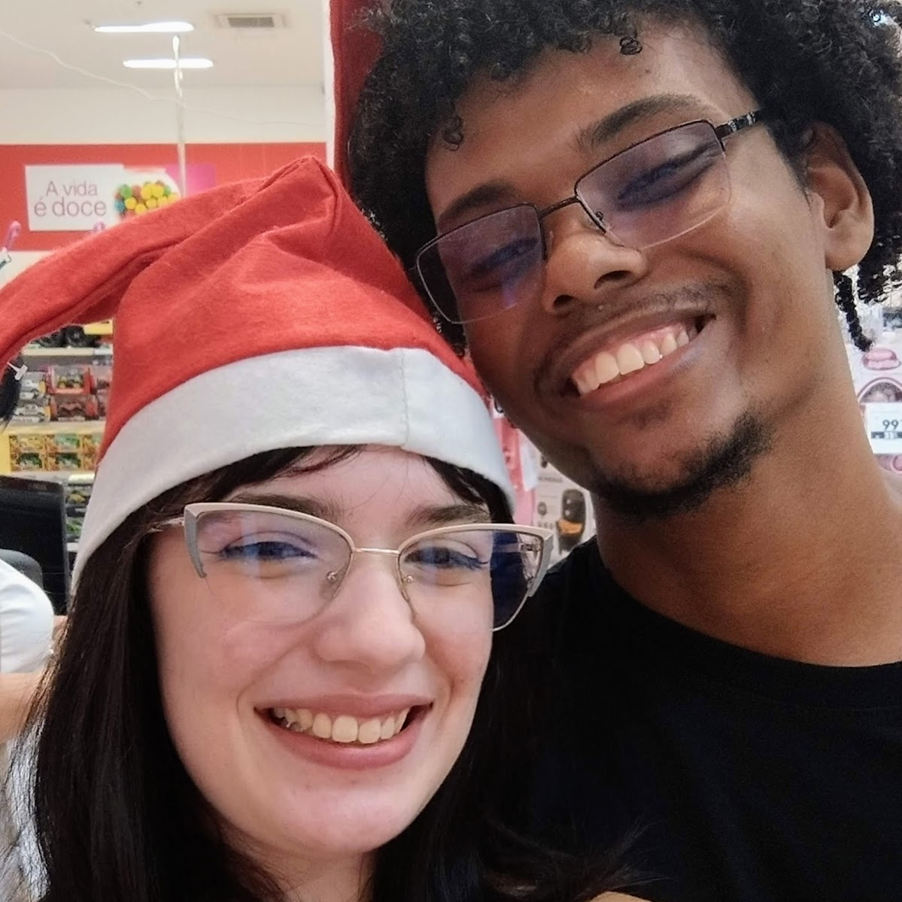
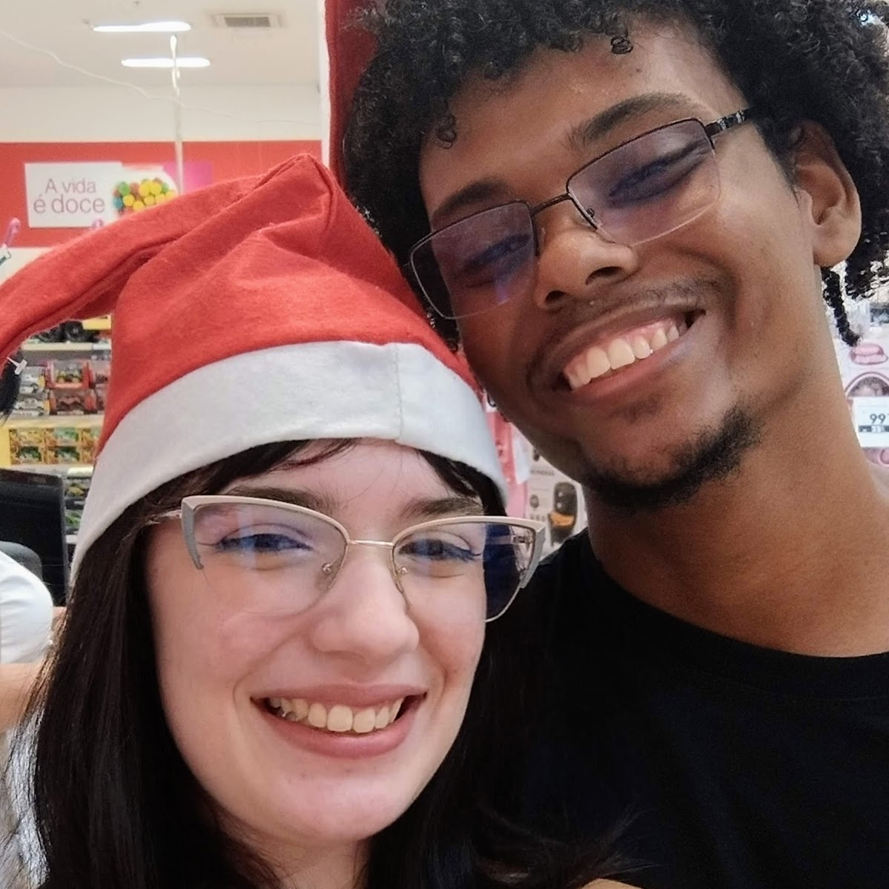
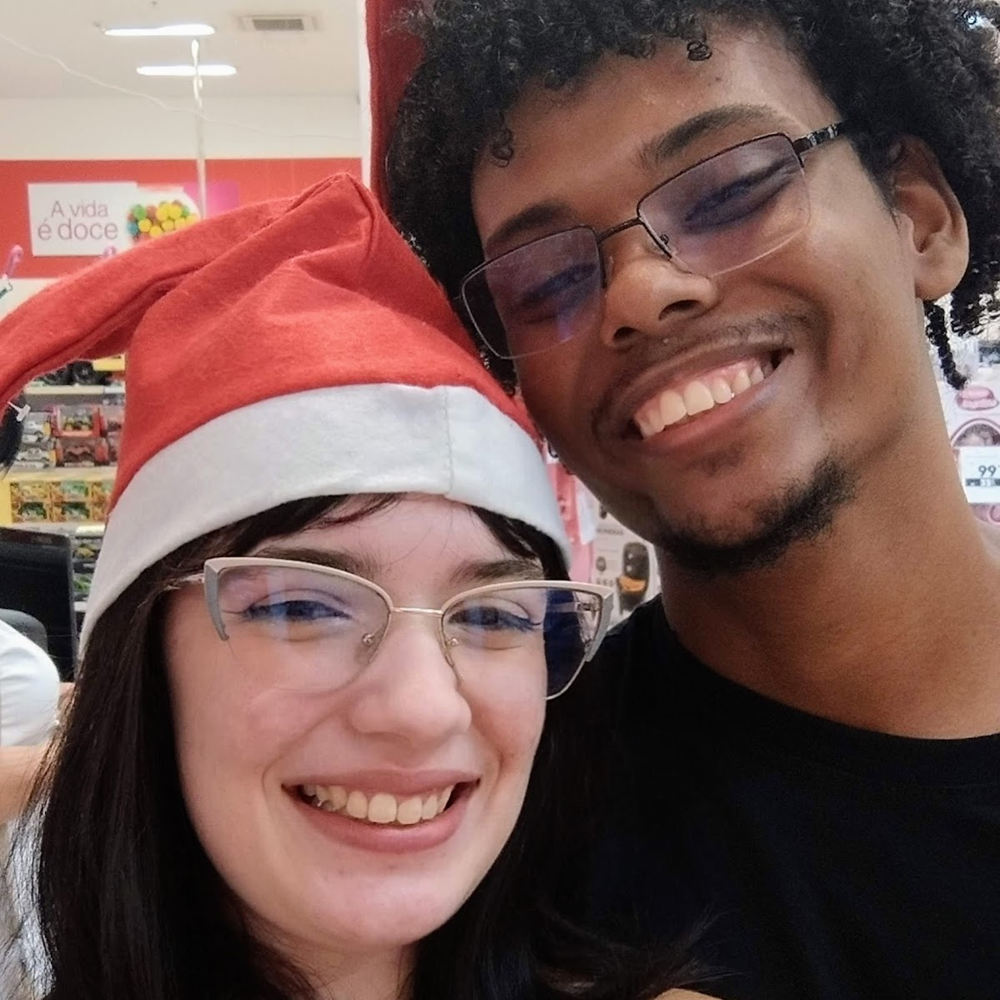
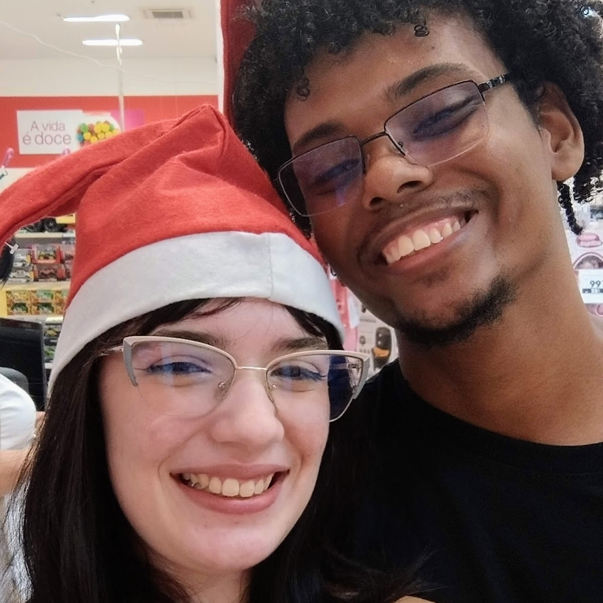

 

Acho que já falei bastante sobre destino naquela pequena cartinha…
mas percebi que não falei o suficiente sobre você.
Sobre o quanto você se dedica.
Sobre o quanto você tenta.
Sobre o quanto você sente.
Eu vejo, meu amor.
Eu vejo você, vejo o nosso futuro, vejo o seu esforço mesmo quando você acha que ninguém está vendo.
E, seja lá o que eu tente dizer com tudo isso… no fim sempre dá na mesma frase:
eu te amo.
Esses dias não estão fáceis. E não estão mesmo.
Mas, enquanto eu faço esse site, a gente assiste mais uma prova do líder e provavelmente o próximo grupo vai esquecer o bastão de novo kkkkk,
eu percebo uma coisa muito clara:
até hoje, não me faltou nada.
E não vai faltar.
Eu não vejo a hora de realizar nossos pequenos sonhos.
Casar no Stardew.
Construir nossa casinha.
Viver tranquilo.
Ser feliz um com o outro.
E, acima de todos eles, o maior sonho de todos:
continuar sendo o amor da sua vida amanhã.
Até porque, mesmo hoje, eu já sei exatamente o que eu quero amanhã.
Eu quero você.
Espero que você tenha certeza de tudo o que eu falo.
Que sinta que nada está faltando.
Mas, se me permite arriscar… eu imagino o que pode estar passando pela sua cabeça.
1️⃣ “E se você achar alguém melhor?”
Eu não estou procurando alguém melhor.
Eu já encontrei você.
Melhor não é quem aparece depois, é quem fica.
Quem constrói.
Quem cresce junto.
E tudo o que eu imagino de futuro…
só faz sentido com você nele.
2️⃣ “E se faltar algo?”
Se um dia faltar, a gente constrói.
Conversa.
Aprende.
Se adapta.
Porque amor não é ausência de falta,
é vontade de preencher juntos.
E enquanto for nós dois, tentando, cuidando e escolhendo um ao outro…
nunca vai faltar o que realmente importa.